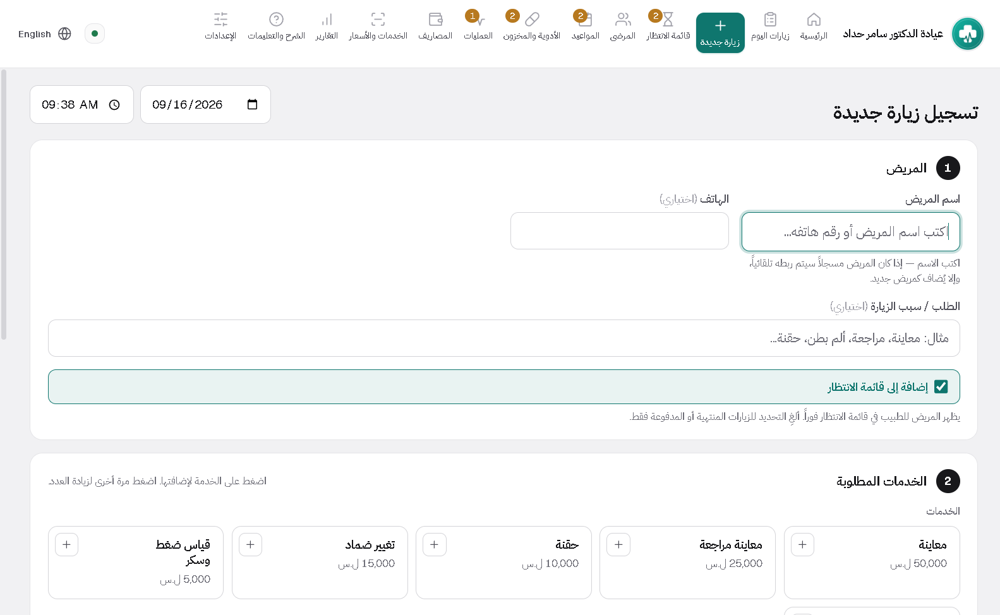
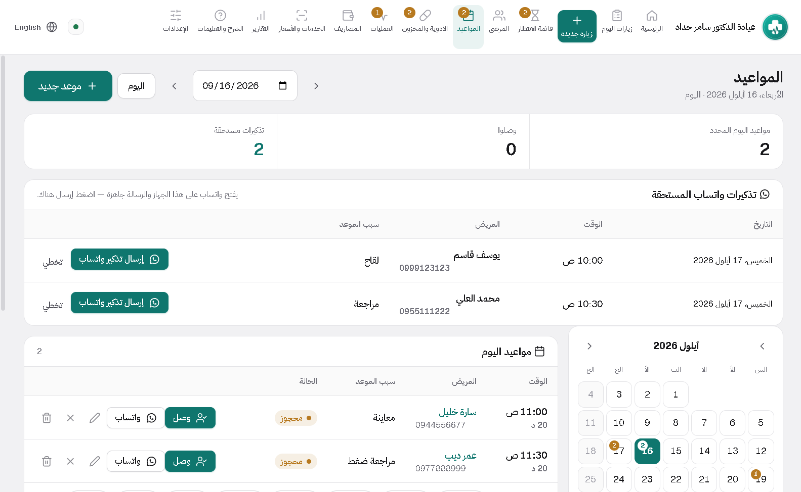
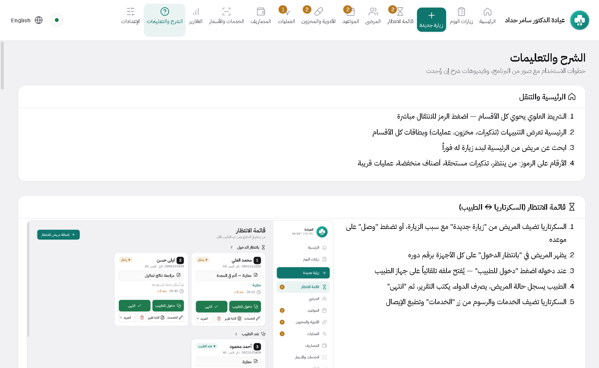
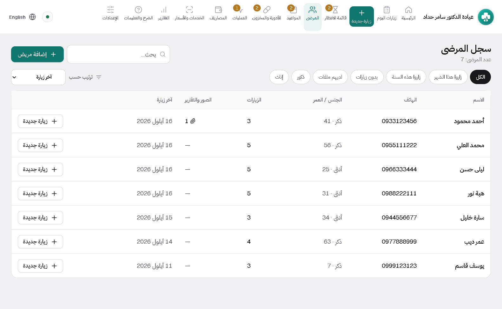
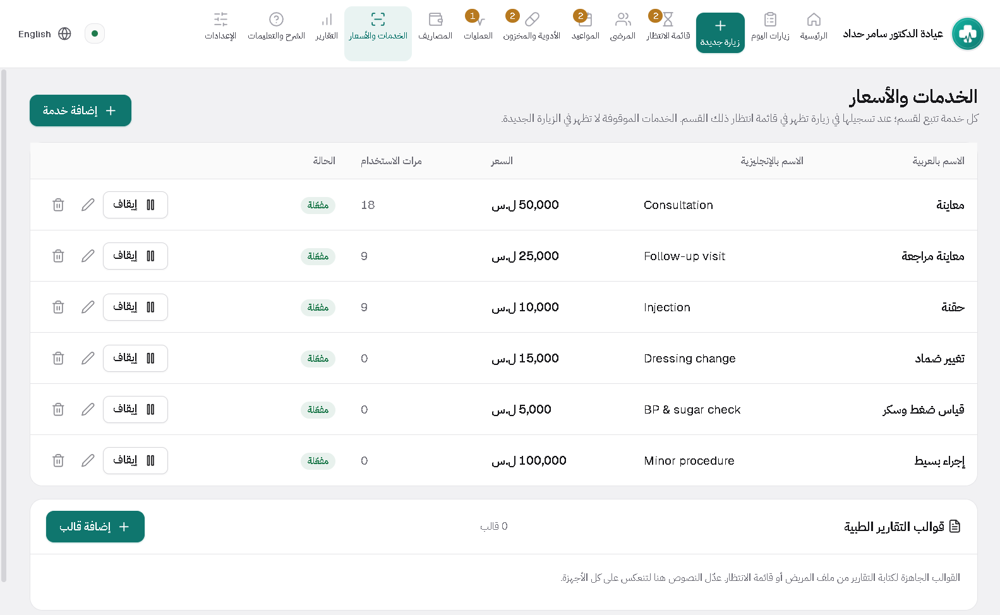

Clinic Desk
Appointments and an on-screen waiting room, patient files with a quick summary, a medicine store, and procedures with printed aftercare.
Inside the program





What it does
On-screen waiting room
Who arrived, who is with the doctor, who is done. Reception and doctor see the same thing at the same moment.
Appointments, including recurring
It knows your working days and hours and offers the free slots. A course of visits can be booked in one go.
Patient summary before they enter
Last visit, chronic conditions, current medication and next appointment on one line at the top.
Medicine store
Quantity per item, a warning when stock runs low, and every dispense logged with its date.
Procedures and aftercare
Ready-made instructions printed on your letterhead or sent over WhatsApp, with the follow-up booked before the patient leaves.
First-run setup wizard
Five questions: clinic name, doctor, logo, working days, number of computers. Then you start.
Installing takes two minutes
No technical experience needed. Download the file, run it, open the program.
Download the file
Press the download button on the product page. The file lands in your Downloads folder.
Run the installer
Double-click it. If Windows shows a warning, choose "More info" then "Run anyway".
Open the program
It asks for your clinic name, doctor name and logo, and it is ready to use.


Not sure which one fits?
Send a message with your specialty and I will reply personally.